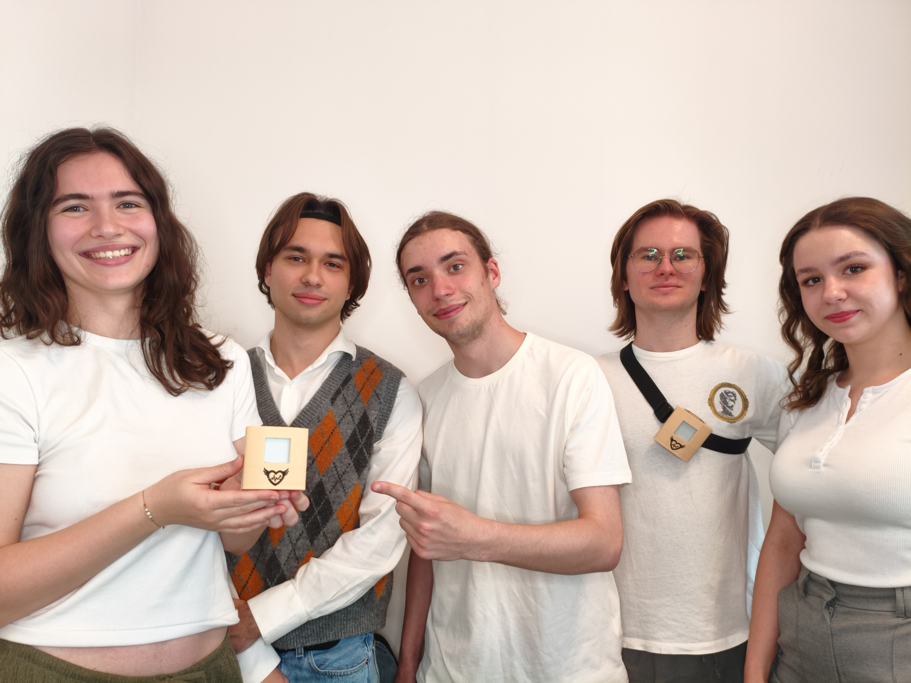
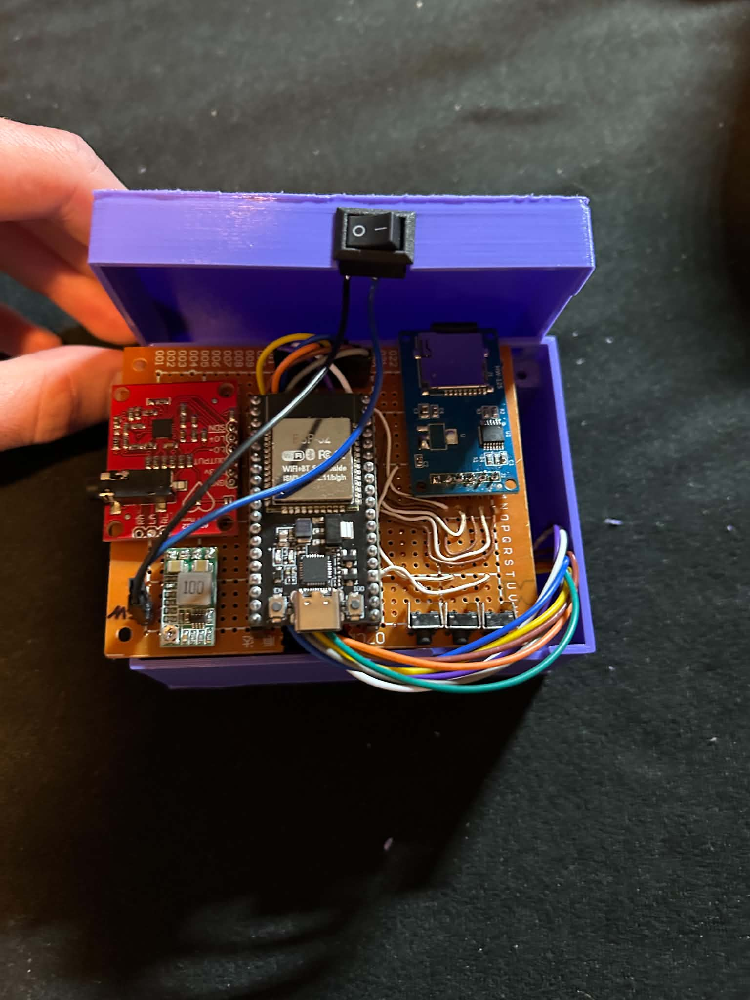
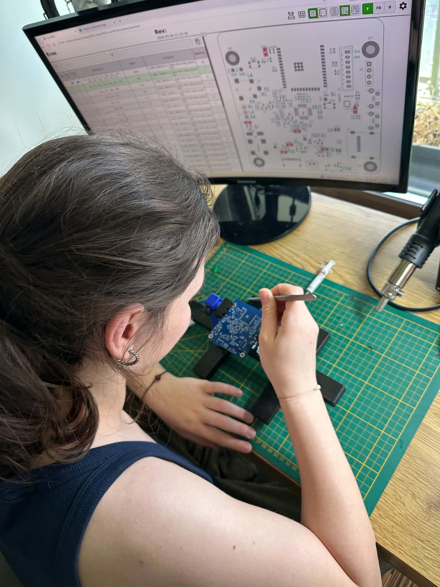
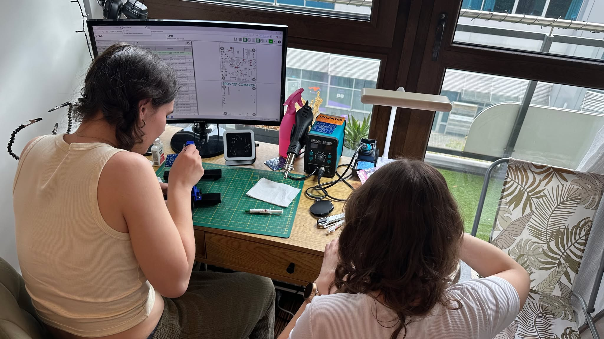
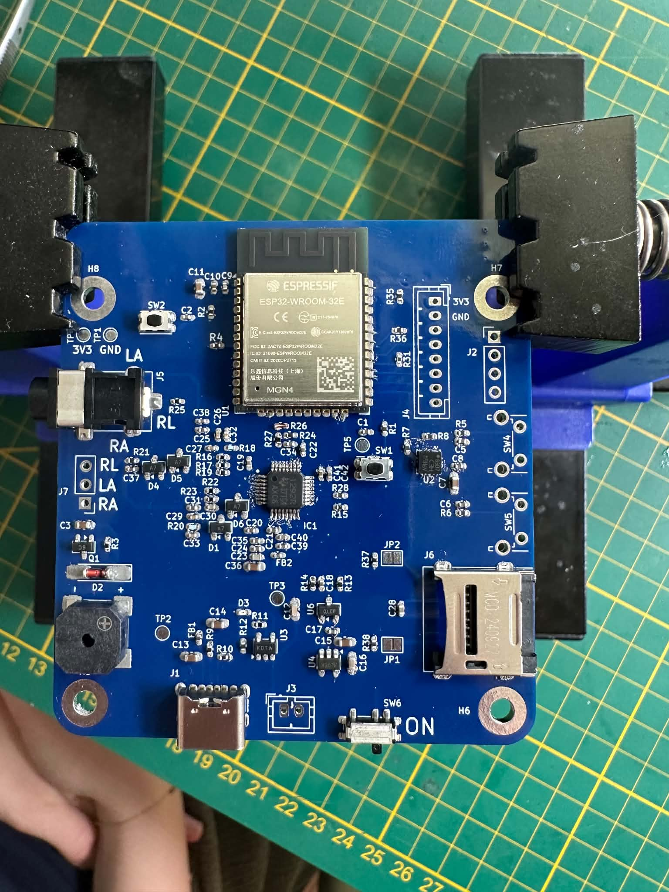
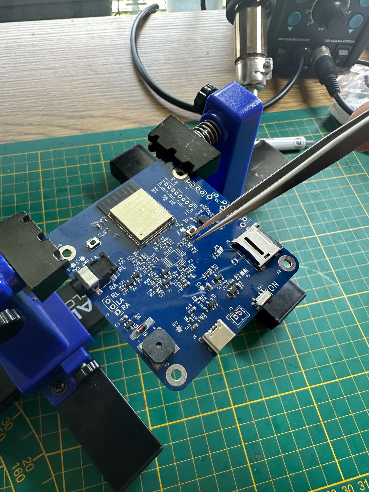
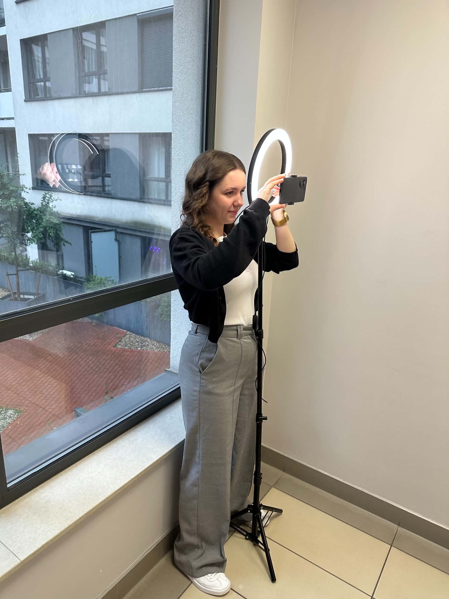
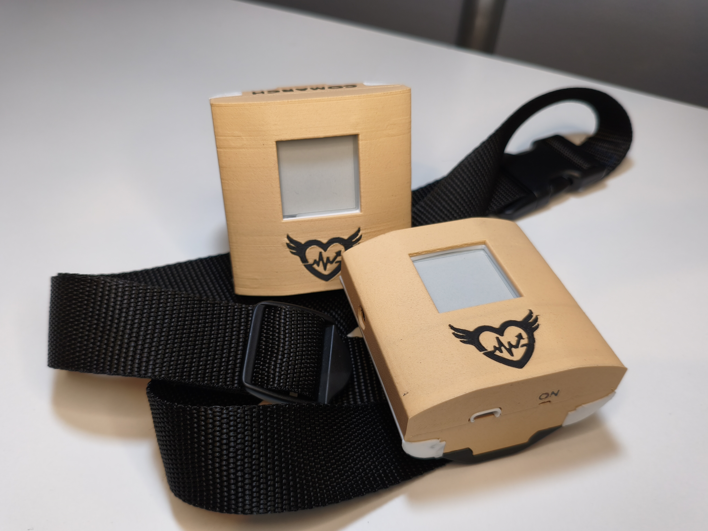

Poznaj Zespół Rythmio
Połączenie inżynierskiej pasji, technologii IoT oraz zaawansowanej analizy danych medycznych.

Studencka Innowacja z Wrocławia
Jesteśmy grupą studentów 6. semestru Automatyki i Robotyki na Wydziale Elektryczności, Fotoniki i Mikrosystemów Politechniki Wrocławskiej. Projekt Rythmio narodził się w naszych głowach jako ambitna odpowiedź na wyzwania współczesnej telemedycyny.
Naszym celem od samego początku było stworzenie w pełni funkcjonalnego, miniaturowego urządzenia typu Holter EKG, zintegrowanego z autorską aplikacją mobilną wspieraną przez algorytmy sztucznej inteligencji. Całość przygotowaliśmy z myślą o uroczystej Konferencji Projektów Zespołowych, stanowiącej podsumowanie naszej dotychczasowej pracy naukowej i konstrukcyjnej.
Współpraca z Comarch
Urządzenie oraz oprogramowanie nie powstałyby w obecnej formie, gdyby nie ścisła kooperacja z firmą Comarch. Jako lider rynku IT oraz nowoczesnych rozwiązań z zakresu e-Health, firma objęła opieką mentorski profil naszego projektu.
Eksperci z firmy Comarch aktywnie wspierali nas na każdym etapie powstawania systemu — od konsultacji schematów elektronicznych modułu analogowego ADS1292, przez optymalizację przesyłania pakietów przez Bluetooth w ESP32, aż po cenne wskazówki dotyczące standaryzacji medycznej generowanych raportów klinicznych. Ta synergia wiedzy akademickiej z komercyjnym doświadczeniem pozwoliła nam stworzyć projekt najwyższej jakości.
Galeria Projektowa
Zobacz, jak wyglądała nasza droga od czystej kartki papieru i prototypu w obudowie, aż po finalny montaż elementów SMD i nagrania promocyjne.

Wczesny Prototyp
Pierwsze zintegrowane uruchomienie modułów w testowej obudowie 3D.

Montaż Komponentów
Weryfikacja rozmieszczenia elementów SMD ze schematem montażowym na ekranie.

Prace Laboratoryjne
Precyzyjne osadzanie i lutowanie mikroukładów peryferyjnych na płytce PCB.

Obwód PCB (Góra)
Zlutowany moduł główny ESP32-WROOM-32E oraz gniazda interfejsów.

Kontrola Jakości Toru
Dokładna inspekcja połączeń wyprowadzeń przetwornika analogowego ADS1292.

Materiały Promocyjne
Praca nad prezentacją wideo i dokumentacją działania Holtera na konferencję.

Ewolucja Obudowy
Porównanie wczesnego wydruku 3D z finalną, zoptymalizowaną wersją obudowy urządzenia.